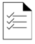

YOUR RESULTS: Here you’ll find the three most important mindsets that allow people to react boldly and creatively in the face of change. Based on your answers, you’ll also see how regularly you employ each mindset.

EXPLORER’S MINDSET
Your Explorer’s Mindset Score:
Self-identified “experts” like to dwell on what they know. Explorers often have just as much knowledge but they are driven more by curiosity about what they don’t yet know. Those with an Explorer’s Mindset learn more quickly because they have less ego-attachment to a position they took yesterday. They deliberately practice the things they’re weakest at, which is the fastest path to improvement. And they are predisposed to seeing change as a chance to experience something new rather than as a threat to their tried and true ways of operating.
SCIENTIFIC MINDSET
Your Scientific Mindset Score:
Those with a Scientific Mindset are always thinking critically about their own thinking. To be human is to have a host of automatic thoughts and biases — we can’t help it. But the scientific mindset helps us to understand these biases and recognize when they’re trapping you. People with a Scientific Mindset both trust their intuition but also constantly test to see if its signals are authentic or just prejudice in disguise. Those with a scientific mindset instinctively seek out information that might prove their thinking wrong while everyone else looks for evidence they’re right. Thus scientific thinkers are slower to form an opinion but less often get locked in mistaken thinking.
COURAGEOUS MINDSET
Your Courageous Mindset Score:
People with a Courageous Mindset think counterintuitively about change. Instead of seeing anxiety as something to be avoided, it allows them to see fear as a sign they’re on their creative edge. Rather than seeing conflict as a threat, it exposes the generative power of disagreement and engaging with people who see the world very differently. And instead of seeing rules as ironclad restrictions to always be followed, the Courageous Mindset allows one to engage in “intelligent disobedience” from which breakthroughs so often emerge.
|  | Want to improve your ability to change yourself in order to change your world? Just hit the button below and I’ll send you the top 3 things you can do to boost each of the three mindsets. |